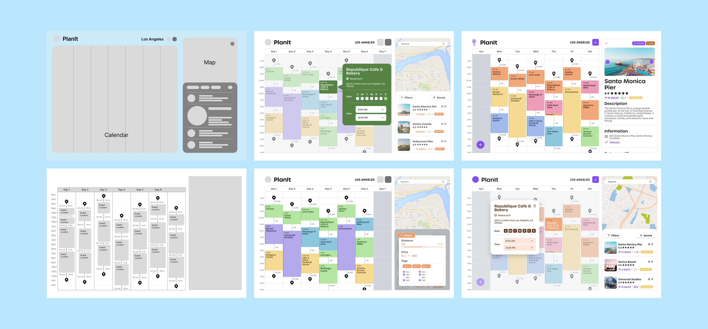

Problem
Planning the perfect travel itinerary can be a
How can we improve the process of itinerary planning through a more streamlined and convenient experience?
Searching and Filtering
Find events tagged with a certain category in the database and see the locations of nearby events
Onboarding Process
Curate a specialized database according to the time, location, and event preferences of the trip
Creating a Schedule
Add new personal events or select one from the event database that fits the schedule
Research
Competitor Analysis
To gain inspiration for our application, we first decided to look to a variety of different websites and programs that focused on planning events or scheduling vacations, taking note of their advantages and disadvantages, and their unique attributes.


User Flows
We created user flows which allowed us to streamline the design process by evaluating the effectiveness of our product structure and noting what needed to be presented to users.
We were able to identify problem points that weren’t considered before such as what needed to be shown to users when scheduling events with a time conflict. We then planned to present a warning message, notifying users to prevent any errors.
Key Takeaways
Design
To prepare working as a cohesive team across different schedules, locations, and committees, we set up a design system. In addition, we research accessibility standards to ensure our design was AAA WCAG complainant.

Ideation
With the single page layout, we first worked to create a wireframe to get a sense of what the placement of the features would look like. We then moved on to prototypes, focusing on the overall layout, information hierarchy, and interactions that would be completed. After continuous modifications and communication with the developers, PlanIt was fully designed to handoff to developers.
Reflections
This was a fall project under UCLA’s Creative Lab, a student-ran club where creatives gather to work together over a course of an academic term to identify and design a solution to a problem.